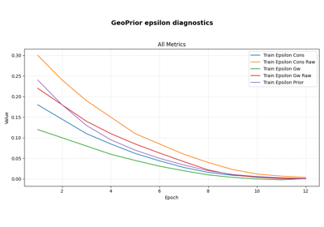
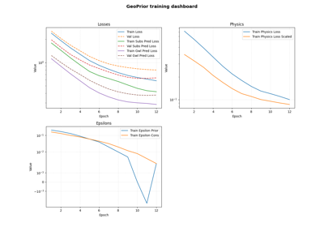
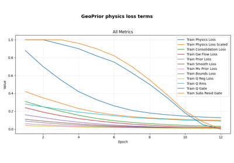
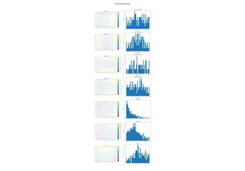

Model inspection#
This gallery focuses on model-inspection helpers in GeoPrior.
Unlike the examples in figure_generation/, the pages collected here
do not primarily aim to build publication-style figures. Unlike the
examples in tables_and_summaries/, they are not mainly about
producing reusable CSV, JSON, or geospatial artifacts.
Instead, this section teaches the compact helper functions used to inspect what happened during training, what the physics-aware signals look like, how payload values are organized, and which physical parameters the model ultimately learned.
The emphasis is therefore on inspection and interpretation, not on final reporting. These examples help answer questions such as:
how training evolved across epochs,
whether physics-related losses behaved as expected,
how
epsilon_*diagnostics changed during optimization,how coordinates and payload arrays can be inspected safely,
which learned physical parameters or field summaries can be extracted after training.
In other words, this gallery is about understanding what the model learned and how it behaved during training.
What this gallery teaches#
Most pages in this section follow the same broad pattern:
create or load a compact synthetic input,
call the real inspection helper,
inspect the returned or saved output,
explain how to interpret the result.
Even when a page writes a PNG or CSV, the central goal is still the same: to support inspection, not final presentation.
Module guide#
Module |
Main output |
Purpose |
|---|---|---|
|
History plots |
Plot a training history robustly, with explicit or automatic metric grouping, validation overlays, and safe log-like scaling. |
|
Epsilon diagnostic plot |
Plot only the |
|
Physics-loss plot |
Plot the main physics loss terms together with optional gate or forcing diagnostics from a GeoPrior training history. |
|
Standard inspection figures |
Automatically save the two standard history-inspection views: epsilon diagnostics and physics loss terms. |
|
Flattened coordinate dictionary |
Flatten batched |
|
Payload inspection plots |
Plot selected physics payload arrays as maps, histograms, or both, using explicit coordinates or coordinates gathered from a dataset. |
|
Parameter summary CSV |
Extract learned physical parameters from a trained model, optionally summarize GeoPrior field outputs, and export the result for later inspection. |
Reading path#
A useful way to move through this gallery is to follow the logic of a real debugging or inspection workflow:
begin with optimization behavior and training history,
move to physics-specific diagnostics,
inspect coordinate-aware payload values,
finish with compact learned-parameter summaries.
That is why the examples are naturally grouped into three broad themes: history inspection, coordinate and payload inspection, and learned parameter extraction.
Gallery organization#
Training history inspection#
These examples focus on Keras-style histories and their GeoPrior physics-aware diagnostics. They are useful when you want to understand how optimization progressed and whether the main physics-related signals behaved reasonably during training.
The main pages in this group are:
plot_history_in.pyplot_epsilons_in.pyplot_physics_losses_in.pyautoplot_geoprior_history.py
Coordinate and payload inspection#
These examples move from training histories to coordinate-aware data and physics payload values. They are especially helpful when you want to inspect flattened coordinate streams, map payload arrays back to space, or build compact diagnostics in notebooks and debugging sessions.
The main pages in this group are:
gather_coords_flat.pyplot_physics_values_in.py
Learned parameter extraction#
This final group focuses on compact summaries of learned physical parameters after training. These helpers make it easier to inspect scalar coefficients, derived summaries, and field-related outputs without building a full reporting pipeline.
The main page in this group is:
extract_physical_parameters.py
Why this separation matters#
This gallery deliberately keeps several tasks distinct:
model training,
model inspection,
artifact building,
publication plotting.
That separation makes the workflow easier to reason about. It also helps users distinguish between helpers that diagnose behavior, builders that produce reusable outputs, and figure pages that focus on communication and presentation.
Notes#
These examples are intentionally compact and lesson-oriented.
The functions in this section are helper-level utilities rather than large end-to-end scripts.
A useful rule of thumb is:
model_inspection/explains helper-based diagnostics,tables_and_summaries/builds reusable analysis products,figure_generation/builds final visual outputs.
Several helpers in this section work directly with Keras-style histories, GeoPrior payload dictionaries, or lightweight dataset-like iterables, which makes them especially convenient for notebooks, debugging sessions, and targeted model review.

Automatically save the standard GeoPrior history diagnostics

Extract learned physical parameters from a trained model

Flatten (t, x, y) coordinates from dataset batches

Plot epsilon diagnostics from a GeoPrior training history

Plot training history with robust grouping and scale handling

Plot physics loss terms from a GeoPrior training history

Plot physics payload values as maps and histograms